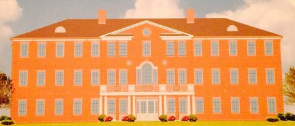

Kappa Sigma

Nickname: Kappa Sig
President: Tanner Klote | (314) 803-7485 | tannerklote@yahoo.com
Recruitment: Adrian Redd | (614) 286-5530
132 Members
GPA: 3.11
Founding Date: December 10, 1869 (National) April 5, 1901
Major community service, chapter and philanthropy events:
CASA Casino Night, Ronald McDonald House (with ADPi), and the Chapter looks
forward to unveiling one more major philanthropic event which will be held
in the fall of 2013.
Recent Awards:
One of Jackson's Chapters (Top Recruitment) (Every Year in Past Decade),
Intramural Champions (2010)
Chapter Bio:
To fully understand the history of Beta-Nu, we must follow the Alpha Omicron
Chapter at Transylvania University. Transylvania merged with Kentucky University
immediately following the Civil War in order to avoid being closed for lack of
funds.
In the early 1890s there was a faculty rule at Kentucky University which prohibited greek-letter fraternities and therefore formation of a chapter at the University. In the meantime there was great commotion over the set-ups of both schools and the University of Kentucky and Transylvania University emerged from the confusion. The University of Kentucky first granted charters to Kappa Sigma, Kappa Alpha Order, and Sigma Chi. John E. Brown was the first President of the chapter and upon graduating declared, "Beta-Nu is certainly at the top of Kentucky State College now and I can see no reason why Beta-Nu should stay there." In October of 1936 the Chapter bought its first house, located on Broadway for roughly $10,000. In 1953 the University proposed a project where 6 fraternity houses would be constructed in close proximity and wanted Kappa Sigma to be a part of it. The Chapter accepted and the house has remained the place that the Beta Nu Chapter has called home ever since. The chapter boasts notable alumni including James Stuckert (UK Hall of Distinguished Alumni), Paul Patton (Former Governor of Kentucky), Ken Towery (CEO of Ken Towery Tires), as well as many others. Recently the University has come to the Chapter about leaving its place in the 6-pack and constructing a new house. With this the Chapter has begun work with Nationals to start laying the groundwork on a house which we should have in a couple of years.